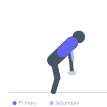
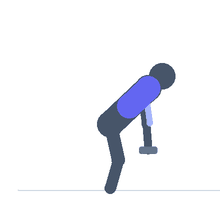

Exercise guide / Heavy Dumbbell Suitcase Row
Heavy Dumbbell Suitcase Row
The heavy dumbbell suitcase row is performed with the dumbbell at the side of the body (like carrying a suitcase) while bent over, rowing the weight upward in a path parallel to the torso rather than toward the hip. The unique line of pull challenges the mid and lower trapezius and rhomboids through a range often undertrained in standard dumbbell rows.
Primary muscles
rhomboid major
trapezius middle
Secondary muscles
latissimus dorsi
biceps brachii
Stabilizers
erector spinae
transverse abdominis
Equipment
Standard Barbell


Starting position
- Stand with feet shoulder width apart. Hold a heavy dumbbell in one hand at the side, as if holding a suitcase. Hinge at the hips to 45-60 degrees, allowing the dumbbell to hang beside the working hip.
Setup
- Use a heavy dumbbell — typically heavier than standard rows since the range of motion is shorter. The free hand can rest on the thigh for light support.
Steps
- Step 1: Begin hinged with the dumbbell hanging beside the hip.
- Step 2: Row the dumbbell directly upward, keeping it close to the thigh and torso.
- Step 3: Drive the elbow upward rather than backward — the motion is more vertical than horizontal.
- Step 4: At the top, the elbow should be at torso height with the forearm vertical.
- Step 5: Lower under control and repeat.
Coaching cues
- Row straight up — not back, not forward
- Keep the dumbbell close to the thigh throughout
- Drive the elbow toward the ceiling
Breathing
- Exhale rowing up. Inhale lowering.
Range of motion
- Dumbbell at full arm extension beside hip to elbow at torso height.
Tempo
- 2-1-2-0
Common mistakes
- Pulling the dumbbell toward the chest rather than straight up alongside the body
- Allowing the torso to rotate excessively — control anti-rotation
Safety
- Maintain neutral spine throughout — heavy loads demand braced core
- Avoid if experiencing lower back pain until cleared
Training
- strength: 5–10 reps
- strength: 3–4 sets
- Rest: {'strength': 120}